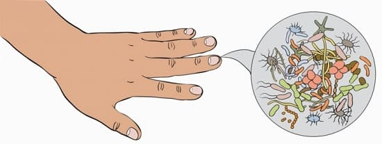
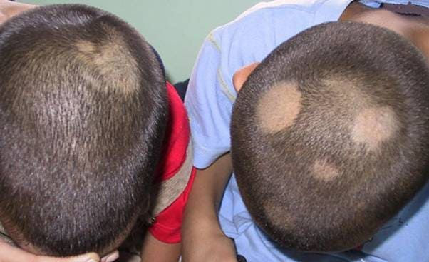
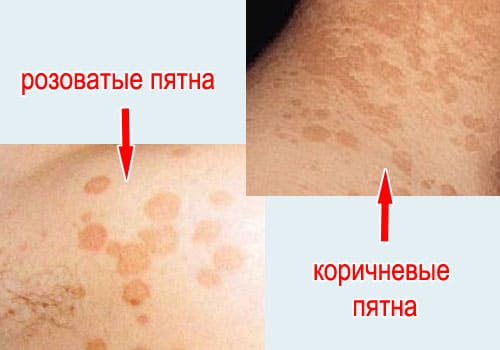
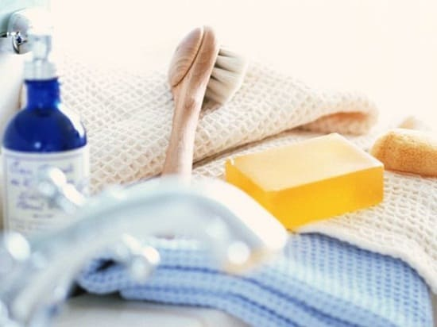

Рано или поздно практически у каждого ребенка или подростка может появиться грибок на каком-либо участке тела. Эти инфекции обычно больше беспокоят родителей, чем самого ребенка, но они легко излечимы.
В зависимости от расположения на теле и общего вида инфекции грибковую инфекцию (иногда говорят «лишай», медицинский термин — «микоз») может быть очень легко или, наоборот, очень сложно отличить от других сыпей. Время от времени ваш врач может делать анализ соскоба кожи, соскребая немного клеток кожи, расположенных на обследуемом участке, и изучая их под микроскопом. В результате часто становится ясно, является ли виновником именно грибок. Хорошей новостью является то, что многие грибковые заболевания можно лечить безрецептурными противогрибковыми кремами. Только более серьезные инфекции требуют лечения рецептурными средствами. Ниже мы приводим список Различных грибковых инфекций, распространенных среди детей и подростков, и советы, как лечить и нет пускать распространения этих инфекций.
СОВЕТ ДОКТОРОВ СИРС: ЗАРАЗНЫ ЛИ КОЖНЫЕ ГРИБКОВЫЕ ИНФЕКЦИИ? Да, они передаются, но не через обычные контакты, а только при длительных или многократных. Ребенок может посещать школу и игровые площадки, не создавая опасности для других. |
СТРИГУЩИЙ ЛИШАЙ
Также известная как tinea corporis (грибковое поражение гладкой части туловища), эта грибковая инфекция очень распространена среди детей. Она часто попадает на детскую через контакты с домашними животными, проявляясь в виде характерной красноватой кольцеобразной сыпи, которая может возникнуть практически на любой части тела. Сыпь часто исчезает самостоятельно.

КАК ОТЛИЧИТЬ СТРИГУЩИЙ ЛИШАЙ ОТ ЭКЗЕМЫ
Стригущий лишай |
Экзема |
Не чешется |
Чешется |
Расположение: в любом месте, кроме локтей и колен |
Расположение: локти, с обратной стороны колен |
Кольцевидная форма с приподнятыми границами и чистым центром |
Более плоские границы, не всегда круговые, центральная часть поражена |
Если ее не лечить, она может распространиться на другие участки тела. Хотя такие сыпи обычно не болезненны и не доставляют беспокойства, их неприглядный вид часто побуждает родителей вести ребенка на осмотр и лечение. Стригущий лишай не всегда легко отличить от других кожных поражений, таких как розовый лишай, псориаз или контактный дерматит. Вашему врачу может потребоваться соскоб с кожи и исследование его под микроскопом, чтобы обнаружить грибок. Как правило, стригущий лишай можно вылечить простыми безрецептурными противогрибковыми кремами или мазями. Только сложные случаи требуют сильных противогрибковых препаратов, отпускаемых по рецепту. Если у вас есть домашнее животное и ребенок постоянно подхватывает стригущий лишай, нужно отвести вашу собаку или кошку на обследование к ветеринару — возможно, животное, надо пролечить от грибка. Стригущий лишай часто путают с экземой, так как экзема тоже проявляется на теле в кольцеобразном виде.
РАЗНОЦВЕТНЫЙ ЛИШАЙ
Еще одна менее распространенная грибковая инфекция, которая может развиться на любой части тела, но чаще всего — на лице, руках или туловище, называется разноцветный лишай, который появляется в виде белых пятен. Пятна становятся светлее летом и темнее зимой — отсюда и название. Этот тип грибковой инфекции часто возникает в результате постоянных контактов с сыростью, например, при долгом нахождении в бассейнах, повторном использование влажных полотенец, пользовании чужими полотенцами и мочалками. Разноцветный лишай часто поддается лечению безрецептурными противогрибковыми препаратами, но иногда приходится применять сильнодействующие медикаменты, отпускаемые по рецепту. От витилиго разноцветный лишай отличается тем, что пораженная кожа шершавая на ощупь. При витилиго (необычная гипопигментация негрибковой природы) кожа остается гладкой.

ЭПИДЕРМОФИТИЯ СТОП
Также известна как tinea pedis. Это заболевание распространено среди детей и подростков, активно занимающихся спортом. Грибок любит влажные, сырые и темные места и поражает пальцы и подошвы стоп, поскольку они часто целый день «проводят» во влажных носках и пропитанной потом обуви. Пораженные участки обычно сильно чешутся, а в тяжелых случаях могут стать болезненными. Известно, что от эпидермофитии довольно трудно избавиться, и может потребоваться несколько недель лечения противогрибковыми препаратами — как безрецептурными, так и прописываемыми врачом. Мы всегда советуем пациентам продолжать лечение эпидермофитии стоп в течение нескольких дней после того, как кожа стала абсолютно чистой, поскольку преждевременное прекращение лечения часто приводит к возобновлению проблемы. Мы также рекомендуем чередовать нанесение противогрибкового крема и присыпок для ног, поможет сохранить ноги в сухости. Другой важный компонент лечения эпидермофитии стоп — избавление от виновников, послуживших первопричиной заболевания. Заставляйте своего ребенка использовать индивидуальные шлепанцы в общественных местах, таких как раздевалка, общественный душ и территория вокруг бассейна. Запретите носить чужую обувь. Чтобы уничтожить грибок, но тщательно чистить все душевые кабины и ванны в доме с отбеливающими средствами. При любой возможности — и по мере безопасности – поощряйте ребенка ходить босиком, носить сандалии или шлепанцы, чтобы уменьшить использование закрытой обуви и носков.
СОВЕТ ДОКТОРОВ СИРС: ВЫБРОСЬТЕ ЗАРАЖЕННЫЕ НОСКИ! Еще один способ избавиться от эпидермофитии стоп — выбросить все старые, вонючие кроссовки и носки и купить новые. Не нужно выбрасывать все носки — только те, которые используются уже слишком давно. |

ПАХОВАЯ ЭПИДЕРМОФИТИЯ
Известный под медицинским названием tinea crucis, этот микоз получил свое название потому, что он обычно поражает паховую зону и часто я является результатом того, что юные спортсмены носят бандаж для защиты интимной зоны. Влажная темная среда благоприятна для грибка. Паховая эпидермофития вызывает довольно сильное раздражение и чешется, как и подразумевает английское название (jock itch — зуд спортсмена). Известно, что вылечить эту инфекцию довольно тяжело, так как часто невозможно исключить использование бандажа во время спортивного сезона. Чтобы не допустить развития паховой эпидермофитии, заставляйте своего ребенка снимать бандаж и спор¬тивные штаны сразу по окончании спортивного мероприятия и затем тщательно мыть, и вытирать эту зону. Эффект от лечения безрецептурными препаратами иногда проявляется спус-тя пару недель. В некоторых случаях может понадобиться использование рецептурного крема. И снова частью лечения могут стать присыпки и противозудные кремы. Следите за регу¬лярной стиркой бандажа своего ребенка, чтобы предупредить появление грибка, и покупайте новый, по меньшей мере на каждый спортив¬ный сезон.
Здоровье ребенка от докторов Сирс / Сирс У. и др.